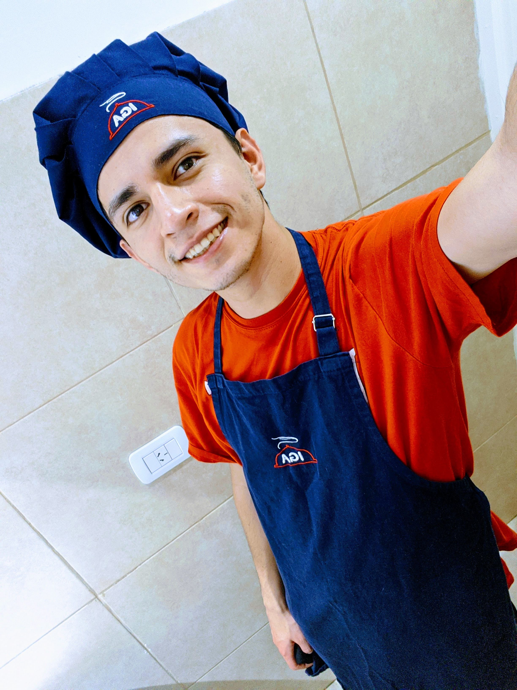

Sobre mí
¡Hola a todos! Soy un chef apasionado y me encanta compartir mi amor por la comida con otros. Me especializo en una amplia variedad de cocinas, desde la cocina tradicional hasta la cocina creativa y moderna. Siempre estoy buscando nuevos ingredientes y técnicas de cocina para mantener mi creatividad fresca.
Comencé mi carrera culinaria en una pequeña cafetería local, donde aprendí los conceptos básicos de la cocina y el servicio de alimentos. Después de eso, tuve la oportunidad de trabajar en algunos de los mejores restaurantes de la ciudad, donde aprendí de algunos de los mejores chefs.
Me encanta la variedad en la cocina, por lo que disfruto tanto de la cocina de fusión como de la cocina regional. Mis platos favoritos son aquellos que combinan ingredientes frescos y sabores audaces para crear algo completamente nuevo y emocionante.
Para mí, la comida es más que solo alimentarse, es una experiencia. Me encanta trabajar en equipo con otros chefs y el personal de servicio para crear una experiencia culinaria memorable para nuestros clientes. Me enorgullece el hecho de que cada uno de mis platos se prepare con cuidado y atención al detalle, y espero que se note en cada bocado.
En mi tiempo libre, disfruto probando nuevos restaurantes, viajando y aprendiendo sobre la cultura culinaria de diferentes países. Me encanta compartir mis conocimientos con otros y siempre estoy dispuesto a compartir consejos y trucos de cocina con cualquiera que esté interesado.

Nombre: Juan Perez
Edad: 32 años
Nacimiento: 2/10/2000
D.N.I: 42 863 800
Telefono: +54 9 261 3836127
Educación
INSTITUTO GASTRONÓMICO IGA
'CURSO' "Chef Express" (2021)
EDUCACIÓN PRIMARIA Y SECUNDARIA
BACHILLER EN EDUCACIÓN FÍSICA
Colegio Nuestra Señora de la Consolata (2006-2018)
ARGENTINA PROGRAMA
Developer Full stack JR <<En curso>>
Recetas
Contenido de la sección de recetas
Hotel & Casino Cóndor de los Andes
Ayudante de Cocina eventual (2021-2022)
Tareas realizadas:
- Limpiar, cortar y pelar verduras.
- Mezclar ingredientes.
- Orden y revisión de las cámaras de carne, verduras y producción.
- Preparación de platos gourmets.
- Hacer producción para los mise en place.
Fran Coffe Makers
Ayudante de Cocina - Bachero (2022)
Tareas realizadas:
- Preparación de desayunos (Una gran variedad de tostados y licuados).
- Lavado, secado y orden de la cocina (Bachero).
- Hacer producción para los desayunos.
- Hacer producción para los mise en place.
Black Eleven 11
Ayudante de Cocina - Bachero (2022)
Tareas realizadas:
- Preparación de desayunos, postres, comida rápida, gourmets,etc
- Lavado y orden de la cocina (Bachero).
- Hacer producción para el mise en place.
Cristóbal Café-Bar
Cocinero - Bachero (2022)
Tareas realizadas:
- Preparación de comida rápida (pizza, hamburguesa, empanadas, etc.)
- Preparación de desayunos (tostadas y tostados).
- Hacer producción para el mise en place.
Habilidades
- Trabajo en equipo.
- Liderazgo y coordinación.
- Predisposición.
- Excelente manejo de plataformas digitales.
- Manipulación de diferentes lenguajes de programación.
- Eficacia y rápido aprendizaje.
- Técnicas de preparación de una gran variedad de alimentos, cocción y presentación de diversos platos.
- Seriedad y concentración en cualquier entorno laboral.
- Conocimiento en técnicas de cocina de diferentes culturas.
- Habilidad para trabajar con una amplia gama de ingredientes y herramientas de cocina.
- Dominio en la preparación de platillos vegetarianos, veganos y sin gluten.
- Capacidad para adaptar las recetas y ajustar las cantidades de ingredientes según las necesidades del cliente.
- Experiencia en la creación y diseño de menús.
- Conocimiento en la gestión de inventario y control de costos en la cocina.
- Habilidad en la planificación y organización de eventos gastronómicos.
- Dominio en la decoración y presentación de platillos para eventos especiales.
- Conocimiento en las normas de higiene y seguridad alimentaria.
- Capacidad para resolver problemas y tomar decisiones en situaciones de alta presión.